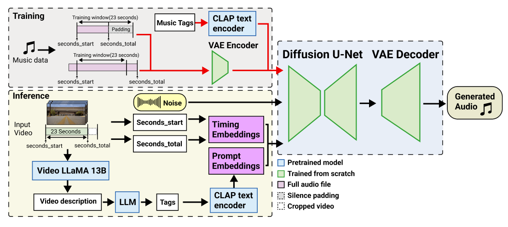

SONIQUE: Video Background Music Generation Using Unpaired Audio-Visual Data
Abstract:
We present SONIQUE, a model for generating background music tailored to video content. Unlike traditional video-to-music generation approaches, which rely heavily on paired audio-visual datasets, SONIQUE leverages unpaired data, combining royalty-free music and independent video sources. By utilizing large language models (LLMs) for video understanding and converting visual descriptions into musical tags, alongside a U-Net-based conditional diffusion model, SONIQUE enables customizable music generation. Users can control specific aspects of the music, such as instruments, genres, tempo, and melodies, ensuring the generated output fits their creative vision.
Generated by SONIQUE
Output from V2Meow
Video to Music Generation (automated without tuning):
Demo 1: Transition Scene from Breaking Bad
Demo 2: Car Chase Scene from Movie Infinite(2021)
Demo 3: Transition Scene from Friends
Demo 4: Landscape Scene from Vloggers Lei and Josh
Demo 5: Vlog Scene from Juan Marcel & Rhylan
Demo 6: Cartoon Scene from Zootopia
Video to Music Generation (with tuning)
Demo 1: Transition Scene from Breaking Bad
Original
Tuned
Original tags: Atmospheric, Bass, Moderate tempo, Nighttime, Orchestral, Strings, 80 BPM
Added Tags: Piano, Ambient
Negative Prompt: N/A
Demo 2: Campaign Scene from Balenciaga 2022
Original
Tuned
Original tags: Ambient, Introspective, Melancholic, Minor Key, Nocturne, Piano Ballad, Slow, Solo Piano, (60-80BPM)
Added Tag:140 BPM
Negative Prompt: Slow, (60-80BPM)